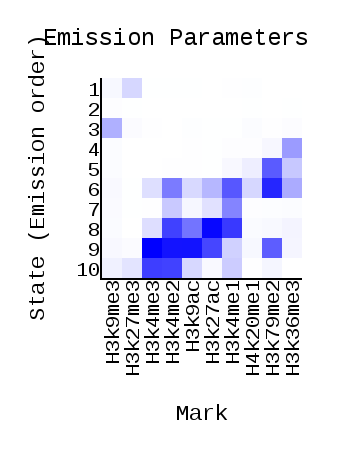
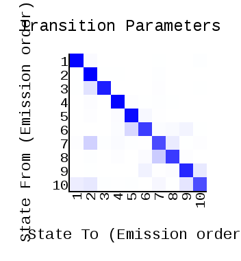
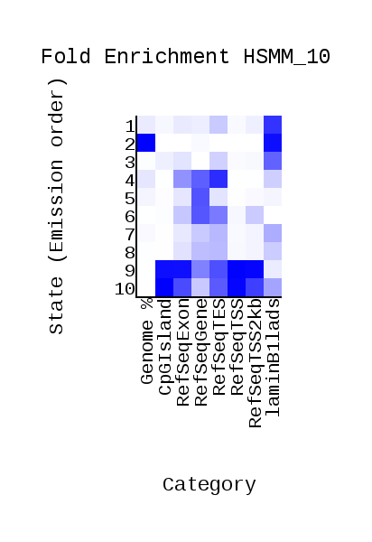
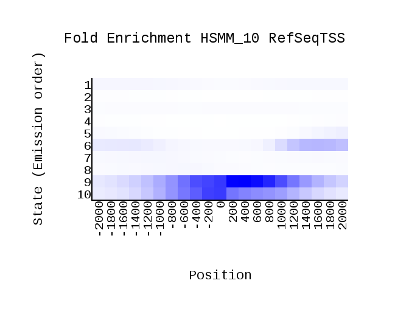
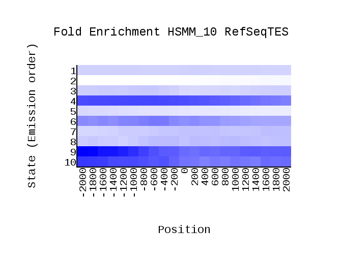

<center><h1>ChromHMM Report</h1></center>
Input Directory: /content/binarizedData/<br>
Output Directory: /content/learnmodel/<br>
Number of States: 10<br>
Assembly: hg19<br>
Full ChromHMM command: LearnModel -b 200 /content/binarizedData/ /content/learnmodel/ 10 hg19
<h1>Model Parameters</h1>
<br>
<li><a href="emissions_10.svg">Emission Parameter SVG File</a><br>
<li><a href="emissions_10.txt">Emission Parameter Tab-Delimited Text File</a><br>
<br>
<li><a href="transitions_10.svg">Transition Parameter SVG File</a><br>
<li><a href="transitions_10.txt">Transition Parameter Tab-Delimited Text File</a><br><br>
<li><a href="model_10.txt">All Model Parameters Tab-Delimited Text File</a> <br>
<h1>Genome Segmentation Files</h1>
<li><a href="HSMM_10_segments.bed">HSMM_10 Segmentation File (Four Column Bed File)</a><br>
<li><a href="Huvec_10_segments.bed">Huvec_10 Segmentation File (Four Column Bed File)</a><br>
<br>
Custom Tracks for loading into the <a href="http://genome.ucsc.edu">UCSC Genome Browser</a>:<br>
<li><a href=HSMM_10_dense.bed>HSMM_10 Browser Custom Track Dense File</a> <br>
<li><a href=HSMM_10_expanded.bed>HSMM_10 Browser Custom Track Expanded File</a><br>
<li><a href=Huvec_10_dense.bed>Huvec_10 Browser Custom Track Dense File</a> <br>
<li><a href=Huvec_10_expanded.bed>Huvec_10 Browser Custom Track Expanded File</a><br>
<h1>State Enrichments</h1>
<h2>HSMM_10 Enrichments</h2>
 <br>
<li><a href="HSMM_10_overlap.svg">HSMM_10 Overlap Enrichment SVG File</a><br>
<li><a href="HSMM_10_overlap.txt">HSMM_10 Overlap Enrichment Tab-Delimited Text File</a><br>
 <br>
<li><a href="HSMM_10_RefSeqTSS_neighborhood.svg">HSMM_10_RefSeqTSS_neighborhood Enrichment SVG File</a><br>
<li><a href="HSMM_10_RefSeqTSS_neighborhood.txt">HSMM_10_RefSeqTSS_neighborhood Enrichment Tab-Delimited Text File</a><br>
 <br>
<li><a href="HSMM_10_RefSeqTES_neighborhood.svg">HSMM_10_RefSeqTES_neighborhood Enrichment SVG File</a><br>
<li><a href="HSMM_10_RefSeqTES_neighborhood.txt">HSMM_10_RefSeqTES_neighborhood Enrichment Tab-Delimited Text File</a><br>
<h2>Huvec_10 Enrichments</h2>
 <br>
<li><a href="Huvec_10_overlap.svg">Huvec_10 Overlap Enrichment SVG File</a><br>
<li><a href="Huvec_10_overlap.txt">Huvec_10 Overlap Enrichment Tab-Delimited Text File</a><br>
 <br>
<li><a href="Huvec_10_RefSeqTSS_neighborhood.svg">Huvec_10_RefSeqTSS_neighborhood Enrichment SVG File</a><br>
<li><a href="Huvec_10_RefSeqTSS_neighborhood.txt">Huvec_10_RefSeqTSS_neighborhood Enrichment Tab-Delimited Text File</a><br>
 <br>
<li><a href="Huvec_10_RefSeqTES_neighborhood.svg">Huvec_10_RefSeqTES_neighborhood Enrichment SVG File</a><br>
<li><a href="Huvec_10_RefSeqTES_neighborhood.txt">Huvec_10_RefSeqTES_neighborhood Enrichment Tab-Delimited Text File</a><br>
